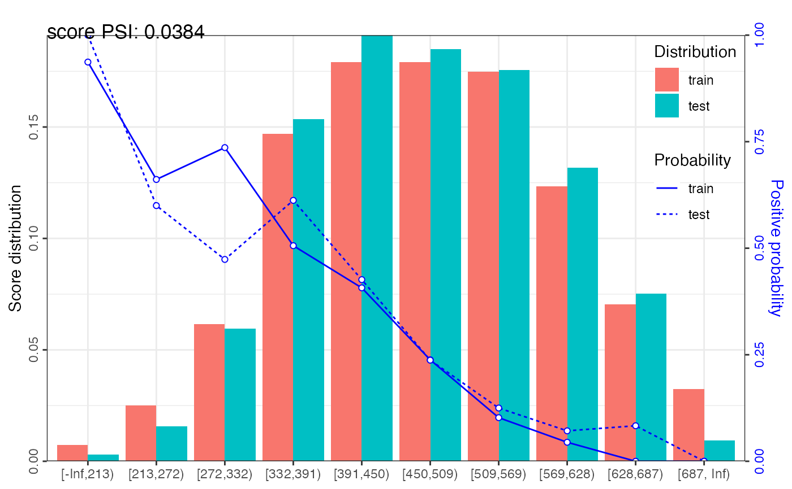
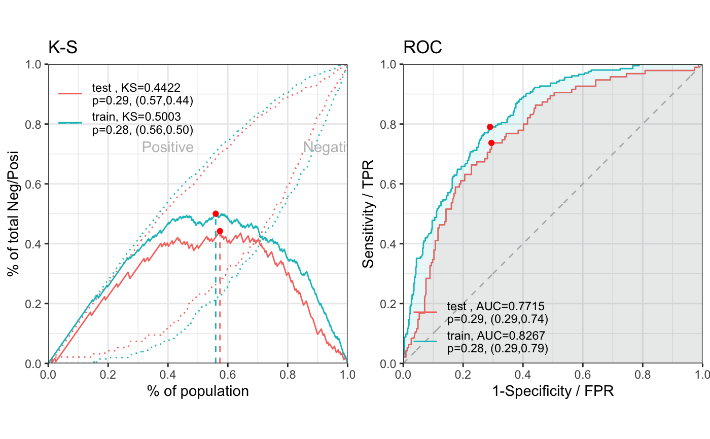
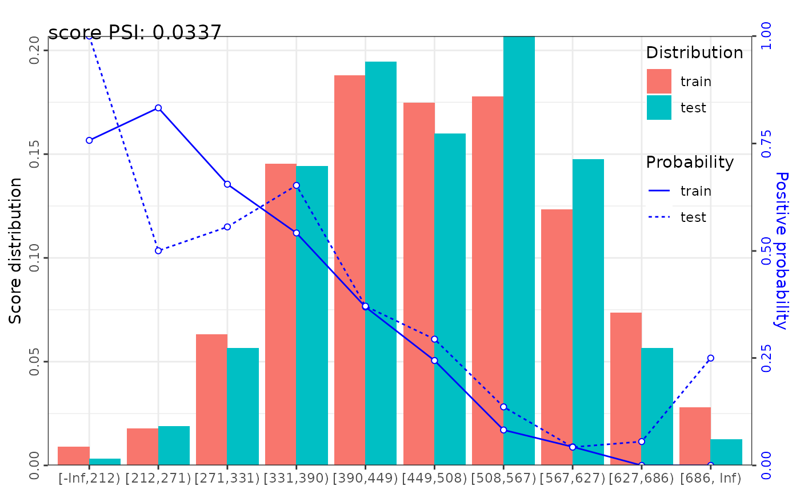

perf_psi calculates population stability index (PSI) for both total credit score and variables. It can also creates graphics to display score distribution and bad rate trends.
perf_psi(score, label = NULL, title = NULL, show_plot = TRUE, positive = "bad|1", threshold_variable = 20, var_skip = NULL, ...)
| score | A list of credit score for actual and expected data samples. For example, score = list(actual = scoreA, expect = scoreE). |
|---|---|
| label | A list of label value for actual and expected data samples. For example, label = list(actual = labelA, expect = labelE). Defaults to NULL. |
| title | Title of plot, Defaults to NULL. |
| show_plot | Logical. Defaults to TRUE. |
| positive | Value of positive class, Defaults to "bad|1". |
| threshold_variable | Integer. Defaults to 20. If the number of unique values > threshold_variable, the provided score will be counted as total credit score, otherwise, it is variable score. |
| var_skip | Name of variables that are not score, such as id column. It should be the same with the var_kp in scorecard_ply function. Defaults to NULL. |
| ... | Additional parameters. |
A data frame of psi and graphics of credit score distribution
The population stability index (PSI) formula is displayed below: $$PSI = \sum((Actual\% - Expected\%)*(\ln(\frac{Actual\%}{Expected\%}))).$$ The rule of thumb for the PSI is as follows: Less than 0.1 inference insignificant change, no action required; 0.1 - 0.25 inference some minor change, check other scorecard monitoring metrics; Greater than 0.25 inference major shift in population, need to delve deeper.
# \donttest{ # data preparing ------ # load germancredit data data("germancredit") # filter variable via missing rate, iv, identical value rate dt_f = var_filter(germancredit, "creditability")#> [INFO] filtering variables ...# breaking dt into train and test dt_list = split_df(dt_f, "creditability") label_list = lapply(dt_list, function(x) x$creditability) # woe binning ------ bins = woebin(dt_list$train, "creditability")#> [INFO] creating woe binning ...# converting train and test into woe values dt_woe_list = lapply(dt_list, function(x) woebin_ply(x, bins))#> [INFO] converting into woe values ... #> [INFO] converting into woe values ...# glm ------ m1 = glm(creditability ~ ., family = binomial(), data = dt_woe_list$train) # vif(m1, merge_coef = TRUE) # Select a formula-based model by AIC m_step = step(m1, direction="both", trace=FALSE) m2 = eval(m_step$call) # vif(m2, merge_coef = TRUE) # predicted proability pred_list = lapply(dt_woe_list, function(x) predict(m2, type = 'response', x)) # scorecard ------ card = scorecard(bins, m2) # credit score, only_total_score = TRUE score_list = lapply(dt_list, function(x) scorecard_ply(x, card)) # credit score, only_total_score = FALSE score_list2 = lapply(dt_list, function(x) scorecard_ply(x, card, only_total_score=FALSE)) ###### perf_eva examples ###### # Example I, one datset ## predicted p1 perf_eva(pred = pred_list$train, label=dt_list$train$creditability, title = 'train')#> [INFO] The threshold of confusion matrix is 0.2821.#> $binomial_metric #> $binomial_metric$train #> MSE RMSE LogLoss R2 KS AUC Gini #> 1: 0.1510414 0.3886405 0.456417 0.2821569 0.5066305 0.8283665 0.6567329 #> #> #> $confusion_matrix #> $confusion_matrix$train #> label pred_0 pred_1 error #> 1: 0 340 136 0.2857143 #> 2: 1 43 162 0.2097561 #> 3: total 383 298 0.2628488 #> #> #> $pic #> TableGrob (1 x 2) "arrange": 2 grobs #> z cells name grob #> 1 1 (1-1,1-1) arrange gtable[layout] #> 2 2 (1-1,2-2) arrange gtable[layout] #>## predicted score # perf_eva(pred = score_list$train, label=dt_list$train$creditability, title = 'train') # Example II, multiple datsets ## predicted p1 perf_eva(pred = pred_list, label = label_list)#> [INFO] The threshold of confusion matrix is 0.2821.#> $binomial_metric #> $binomial_metric$train #> MSE RMSE LogLoss R2 KS AUC Gini #> 1: 0.1510414 0.3886405 0.456417 0.2821569 0.5066305 0.8283665 0.6567329 #> #> $binomial_metric$test #> MSE RMSE LogLoss R2 KS AUC Gini #> 1: 0.1733613 0.4163668 0.522946 0.1709859 0.456203 0.7709586 0.5419173 #> #> #> $confusion_matrix #> $confusion_matrix$train #> label pred_0 pred_1 error #> 1: 0 340 136 0.2857143 #> 2: 1 43 162 0.2097561 #> 3: total 383 298 0.2628488 #> #> $confusion_matrix$test #> label pred_0 pred_1 error #> 1: 0 153 71 0.3169643 #> 2: 1 25 70 0.2631579 #> 3: total 178 141 0.3009404 #> #> #> $pic #> TableGrob (1 x 2) "arrange": 2 grobs #> z cells name grob #> 1 1 (1-1,1-1) arrange gtable[layout] #> 2 2 (1-1,2-2) arrange gtable[layout] #>## predicted score # perf_eva(score_list, label_list) ###### perf_psi examples ###### # Example I # only total psi psi1 = perf_psi(score = score_list, label = label_list) psi1$psi # psi data frame#> variable dataset psi #> 1: score train_test 0.04270491psi1$pic # pic of score distribution#> $score#># modify colors # perf_psi(score = score_list, label = label_list, # line_color='#FC8D59', bar_color=c('#FFFFBF', '#99D594')) # Example II # both total and variable psi psi2 = perf_psi(score = score_list, label = label_list) # psi2$psi # psi data frame # psi2$pic # pic of score distribution ###### gains_table examples ###### # Example I, input score and label can be a list or a vector g1 = gains_table(score = score_list$train, label = label_list$train) g2 = gains_table(score = score_list, label = label_list) # Example II, specify the bins number and type g3 = gains_table(score = score_list, label = label_list, bin_num = 20) g4 = gains_table(score = score_list, label = label_list, method = 'width') # }